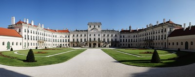

Győr-Moson-Sopron megye*
Győr-Moson-Sopron megye az ország északnyugati részében található. Északról a Duna és Szlovákia, keletről Komárom-Esztergom megye, nyugatról Ausztria, délről Veszprém megye, délnyugatról Vas megye határolja. Székhelye: Győr. A nyugati határvonal zegzugosan halad. A Fertő tótól keletre a Hanság egy része Ausztriához tartozik, ugyanakkor Sopron és környéke félszigetszerűen nyúlik be a mai Ausztria területére.
Győr-Moson-Sopron megye területe 4208 km2, Magyarország területének 4,5%-a. Fele akkora, mint hazánk legnagyobb megyéje, kétszerese a szomszéd Komárom-Esztergom megyének. A megye területén kb. 450 000 ember él, ennek felét a megye három legnagyobb városa, a 129 ezer lakosú Győr megyei jogú város, a 62 ezer lakosú Sopron megyei jogú város és a kb. 32 ezer lakosú Mosonmagyaróvár adja.
A megye területén haladnak keresztül a Közép- és Nyugat-Európával összekötő fontos útvonalak. Itt halad a kettős vágányú Budapest-Bécs-vasútvonal az M1-es autópálya, és nyugat felé létesít kapcsolatokat a Duna mind nagyobb fontosságú vízi útja.
A megye szélső települései égtájak szerint:
- a megye legészakibb települése Rajka (Mosonmagyaróvári járás),
- a megye legdélibb települése Fenyőfő (Pannonhalmi járás),
- a megye legkeletibb települése Rétalap (Győri járás),
- a megye legnyugatibb települése Sopron (Soproni járás).
Önkormányzat és közigazgatás
Járások és települések:
|
Járás neve
|
Települések
száma
|
|
Csornai járás
|
33
|
|
Győri járás
|
35
|
|
Kapuvári járás
|
19
|
|
Mosonmagyaróvári járás
|
26
|
|
Pannonhalmi járás
|
17
|
|
Soproni járás
|
39
|
|
Téti járás
|
14
|
Turizmus
Győr-Moson-Sopron megye a magyarországi turisztikai régiók közül a Nyugat-Dunántúl régióba tartozik, fő turisztikai vonzerejét a számtalan értékes műemlék, Győr és Sopron város történelmi hangulatú belvárosa, a megyei kisvárosok és falvak barokk templomai, kastélyai, valamint a nagy hagyományú borkultúra jelenti. Sokan keresik fel a gyakran csak „Magyar Versailles”-ként becézett fertődi
Esterházy-kastélyt és a magyarság egyik nemzeti zarándokhelyének számító nagycenki Széchenyi-kastélyt.
